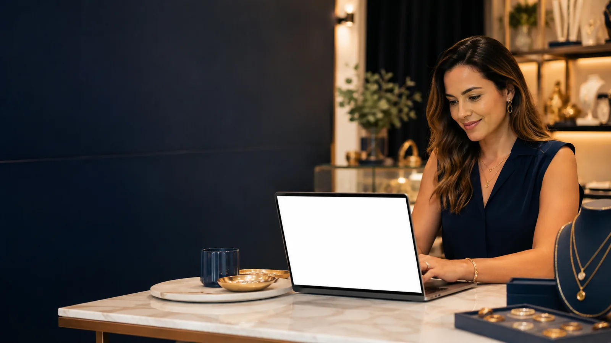
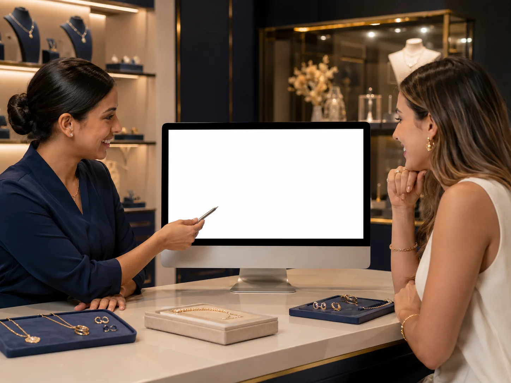
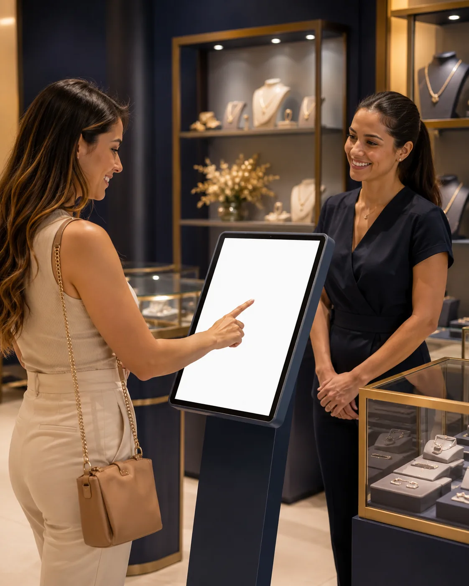

Pedidos mais organizados
Cliente, produto e personalização no mesmo fluxo.
Organize atendimento, pedidos, prévia da gravação, produção, totem e controle da loja em uma rotina simples de acompanhar.

Cliente, produto e personalização no mesmo fluxo.
Mostre como vai ficar antes de enviar para produção.
O que foi aprovado segue com mais segurança.
Atendimento guiado no tablet, no formato atual do sistema.

O cliente entende melhor a personalização, sua equipe confirma o pedido com mais segurança e a produção recebe a informação do jeito certo.
O Totem ajuda a loja a atender com mais agilidade, mantendo uma experiência simples, bonita e organizada. Por enquanto, a landing trata o Totem no formato horizontal usado hoje.

Cadastre cliente, produto e personalização sem depender de conversa solta.
Busque por nome, WhatsApp ou CPF e mantenha histórico de atendimento.
Controle modelos, cores, correntes, quantidades e reposição.
Acompanhe entradas, saídas e movimentação diária da loja.
Visualização antes de enviar para produção.
Fila mais clara para o que precisa ser separado, gravado e entregue.
Autoatendimento guiado no tablet.
Ativação segura com PC principal e PC cliente.
O Profissional fica em destaque porque tende a ser o melhor ponto de partida para quem atende, personaliza e produz todos os dias.
Mensal para começar agora. Semestral e anual podem aparecer parcelados sem juros no cartão.
Use como guia rápido para escolher sem exagero.
| Recurso | Inicial | Profissional | Avançado |
|---|---|---|---|
| Computadores | 1 PC | PC principal + cliente | Mais computadores |
| Atendimento e pedidos | Sim | Sim | Sim |
| Prévia da gravação | Essencial | Completa | Completa |
| Produção | Essencial | Completa | Avançada |
| IA Local | — | Sim | Sim |
| Totem horizontal | — | Sim | Mais totens |
| Suporte | Inicial | Completo | Prioritário |
Direto ao ponto, sem enrolação.
Não. O Terê Studio não é um ERP fiscal. Ele organiza atendimento, pedidos, personalizações, produção, estoque, caixa e rotina da loja.
Sim, conforme o plano escolhido. O primeiro computador ativado vira o PC principal. PCs clientes respeitam o limite do plano.
O Totem entra conforme o plano. Hoje a landing trata o Totem horizontal, que é o formato atual que você usa.
Depois da confirmação, a licença aparece uma única vez na página de ativação por segurança.
Sim. A recuperação é feita pelo suporte oficial, conferindo os dados da ativação.
Fale com o suporte para ativação, instalação, recuperação de licença ou primeiros passos.